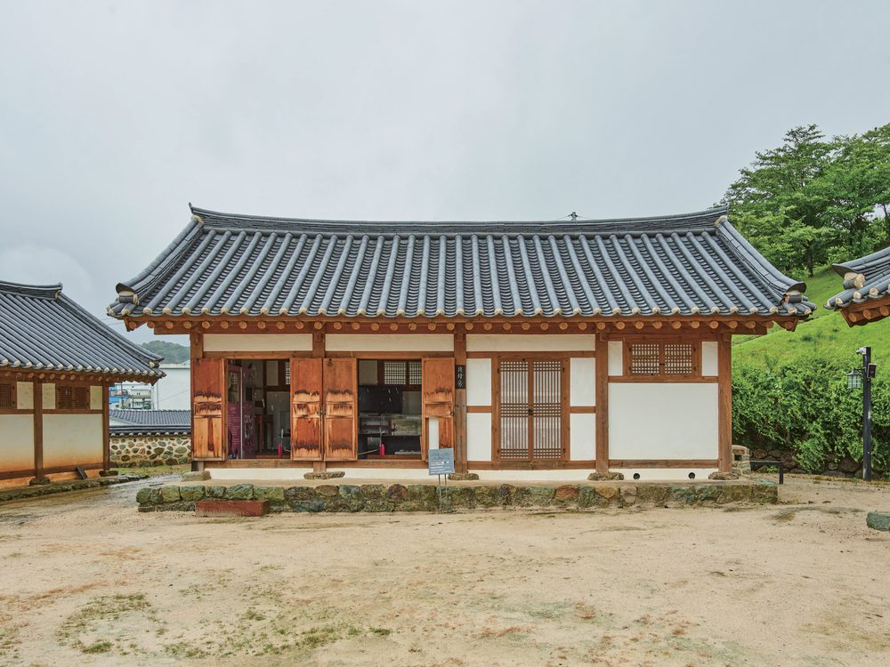
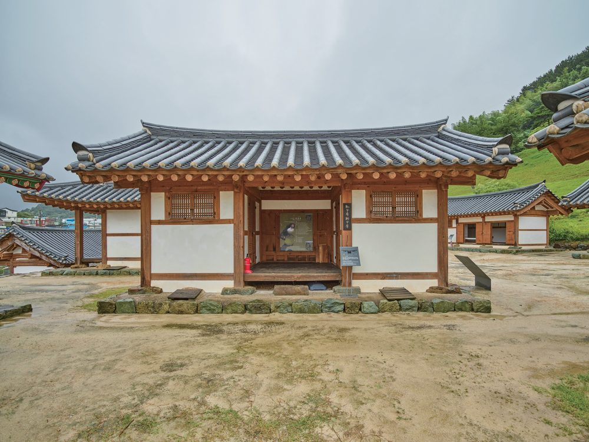
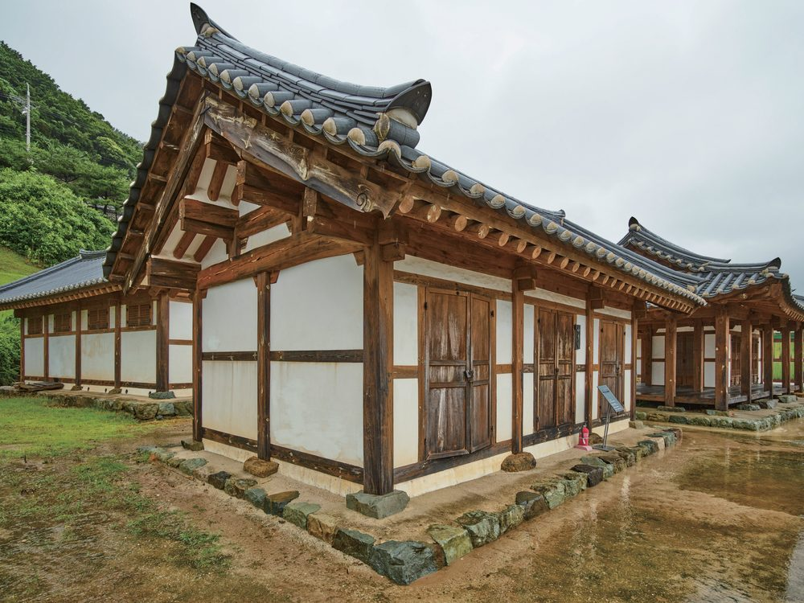
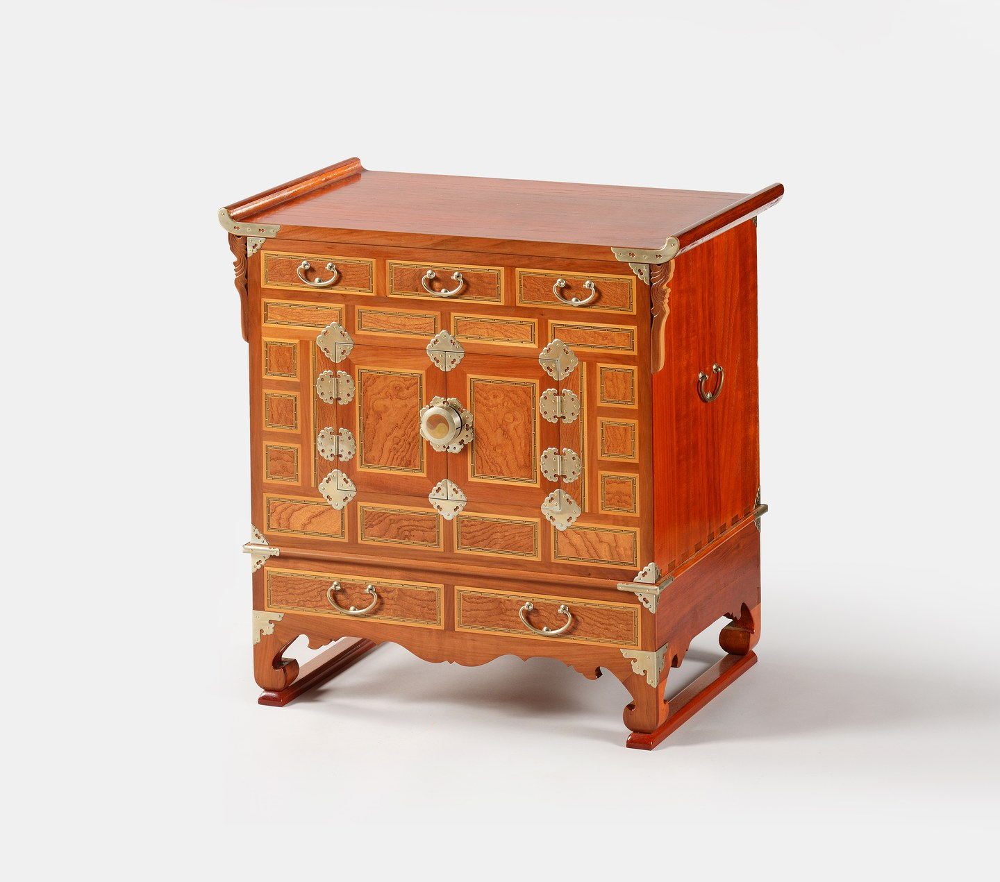
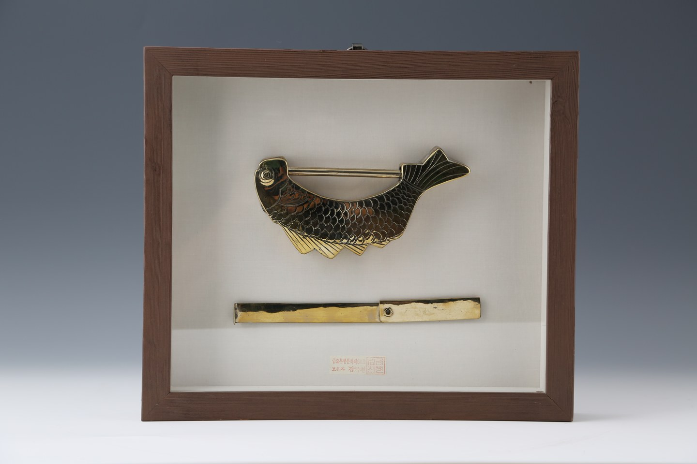
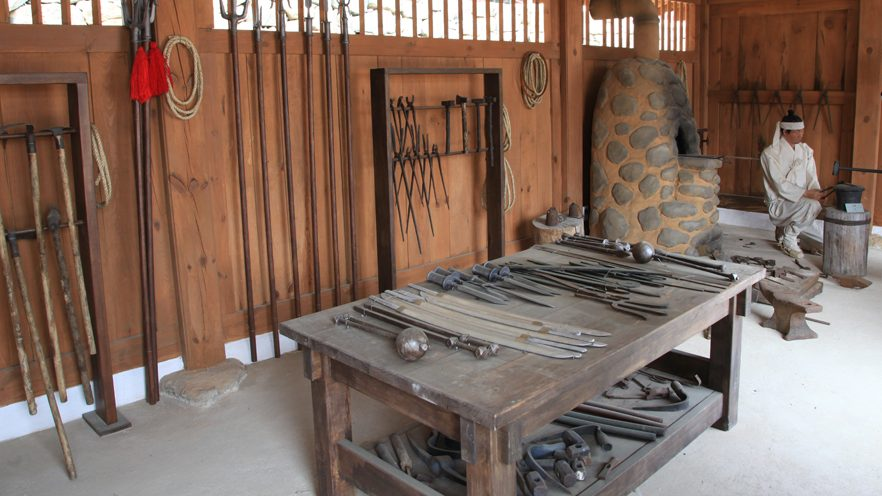

군영을 움직이는 것은 지휘관의 명령과 수군의 배만이 아닙니다. 병사들이 사용할 장비와 무기, 일상에 필요한 물건, 의례와 행사에 쓰이는 물품이 함께 갖추어져야 군영이 제대로 운영될 수 있습니다. 통제영에는 이러한 물건을 만드는 숙련된 장인들이 여러 지역에서 모여 있었고, 공방에서는 군수품뿐 아니라 생활용품과 임금께 올리는 진상품까지 제작했습니다.
군사적 필요에서 출발한 제작 활동은 다양한 물건을 만드는 공예로 넓어졌고, 이 공방들을 통틀어 ‘12공방’이라 불렀습니다. 여기서 ‘12’는 공방이 정확히 열두 곳이었다는 뜻이 아닙니다. 통영문화도시센터와 한국관광공사 자료는 ‘12’를 많은 종류의 공방과 여러 장인이 모여 있음을 나타내는 수사적 표현으로 풀이합니다. 실제 공방의 종류와 구성은 시기와 기록에 따라 달라졌습니다. 따라서 역사 속 공방의 종류와 오늘날 복원된 건물 수는 구분해서 이해할 필요가 있습니다.
12공방 동선
세병관 뒤편 공방 거리로 들어가 04 선자방부터 16 야장방까지 차례로 둘러봅니다. 순서를 보여 주는 개념도로, 실제 건물 위치와는 다릅니다. 번호를 누르면 해당 이야기로 이동합니다.
이곳의 장인들은 각자 다른 재료와 기술을 다루었습니다. 말총을 엮고, 대나무를 가늘게 쪼개고, 나무를 다듬고, 자개를 붙이며, 금속을 두드려 장식을 만들었습니다. 각 공방의 작업은 저마다 달랐지만, 그 결과물은 통제영을 운영한다는 하나의 목적으로 이어져 있었습니다.
동선을 따라 만나는 13개 공방
지금 통제영에는 2013년 복원 사업으로 다시 지은 13개 공방이 있습니다. 관람 동선을 따라 순서대로 소개합니다.
04선자방출처: 통영시립박물관통영미선출처: 국립민속박물관 파주
04선자방부채에 담은 바람과 장식
선자방은 통영의 명물 부채, 미선(尾扇)을 만들던 공방입니다. 미선이라는 이름은 물고기의 꼬리지느러미를 닮은 형태에서 비롯된 것으로 설명됩니다. 단오 무렵 임금이 신하에게 부채를 하사하던 풍습과도 연결되며, 통영 미선은 부채살의 섬세함과 손잡이의 장식으로 알려져 있습니다. 선자방은 임금의 하사품을 만들던 중요한 공방이었다고 전합니다.
05탕건출처: 국립민속박물관 파주말총으로 엮은 정자관출처: 국립민속박물관 파주
05총방말총을 엮는 섬세한 손길
총방은 말총으로 탕건과 유건 등을 만들던 공방입니다. 가느다란 말총을 엮는 작업은 단단하게 묶는 기술만으로 완성되지 않습니다. 재료가 가진 유연함을 살리면서도 일정한 형태를 유지해야 합니다. 머리에 쓰는 물건은 가볍고 편안해야 하는 동시에 형태를 갖추어야 했으므로, 재료를 이해하고 다루는 손기술이 중요했습니다.
06입자방출처: 통영시립박물관갓과 갓집출처: 국립민속박물관 파주
06입자방갓과 전통 모자의 형태를 만들다
입자방은 갓을 비롯한 여러 전통 모자를 만들던 공방입니다. 흑립과 벙거지, 삿갓, 패랭이 등이 대표적인 제작품입니다. 갓은 형태만 보면 단순한 모자처럼 보이지만, 가는 재료를 엮고 여러 부분을 연결해 완성해야 하는 복합적인 공예품입니다. 완성된 갓의 선과 비례를 살펴보면 장인의 손기술이 얼마나 세밀한지 짐작할 수 있습니다.
07상자방출처: 통영시립박물관통영 대발출처: 국립민속박물관 파주
07상자방물건을 지키는 엮음의 기술
상자방은 대나무를 쪼갠 대오리와 버들가지, 싸리 등을 엮어 상자를 만들던 공방입니다. 상자는 물건을 담는 용기인 동시에, 물건을 안전하게 보관하고 운반하기 위한 도구였습니다. 특히 진상할 전복을 담기 위해서는 가볍고 바람이 잘 통하는 상자가 필요했습니다. 상자방의 엮음 기술은 실용적인 물건을 만드는 데 쓰였고, 대나무를 가늘게 다루는 기술은 통영 대발과도 이어집니다.

08칠방출처: 통영시립박물관나전경대출처: 국립민속박물관 파주
08칠방옻칠과 자개로 완성하는 나전칠기
칠방은 옻칠을 다루어 나전칠기를 만들던 공방입니다. 나무로 만든 가구와 그릇에 옻칠을 올리면 표면이 단단해지고 깊은 윤이 납니다. 여기에 전복 껍데기의 빛나는 안쪽 층을 잘라 붙이면, 칠을 한 표면 위에 빛과 무늬가 더해집니다. 자연에서 얻은 재료를 가공해 장식으로 바꾸는 과정은 재료의 성질을 이해하는 데서 출발합니다. 통영의 나전칠기는 이처럼 옻칠 기술과 자개를 다루는 기술이 만나는 공예입니다.

09화자방·안자방 건물출처: 통영시립박물관목화출처: 국립민속박물관 파주
09화자방가죽으로 만든 신발
화자방은 가죽으로 군화와 목화 등 신발을 만들던 공방입니다. 목화는 벼슬아치들이 관복 아래 신던 목이 긴 가죽 장화입니다. 가죽을 다루는 기술이 군영의 복장과 장비에 사용되었다는 점은 통제영 공예의 실용적 성격을 잘 보여 줍니다. 말의 안장은 같은 건물에 있는 안자방에서 따로 만들었습니다.
10화자방·안자방 건물출처: 통영시립박물관나전안장출처: 국립민속박물관 파주
10안자방말 위의 자리를 만드는 기술
안자방은 말의 안장을 만들던 공방입니다. 안장은 말 등에 얹어 사람이 앉을 수 있게 하는 도구로, 말을 타고 이동하고 싸우는 데 꼭 필요한 장비였습니다. 화자방과 한 건물을 나누어 씁니다. 같은 가죽을 다루어도 신발과 마구는 공방을 나누어 만들었습니다.
11동개방출처: 통영시립박물관동개출처: 국립민속박물관 파주
11동개방활과 화살을 몸에 지니는 방식
동개방은 활과 화살을 넣어 등에 지는 가죽 주머니인 동개와, 활을 허리에 꽂는 궁대를 만들던 공방입니다. 무기 자체를 만드는 기술과 그것을 몸에 지니고 이동할 수 있게 하는 기술은 서로 다릅니다. 동개와 궁대는 수군의 군장과 장비를 구성하는 물건으로, 가죽의 형태를 잡고 사용 목적에 맞게 제작하는 작업이 필요했습니다.
12화원방출처: 통영시립박물관수군조련도출처: e뮤지엄
12화원방군영의 의례를 장식한 그림
화원방은 의식과 행사에 쓰이는 장식화를 그리던 공방입니다. 통제영의 제작 활동은 무기와 생활 도구에만 머물지 않았습니다. 의례와 공식 행사를 치르고 군영의 위엄을 드러내는 데에도 그림과 장식이 필요했습니다. 그림은 공간을 꾸미는 요소이면서 동시에 의례의 성격을 시각적으로 드러내는 수단이었습니다.


13소목방출처: 통영시립박물관통영버선장출처: 국립민속박물관 파주
13소목방생활을 담는 목가구
소목방은 나무로 가구와 문방구를 만들던 공방입니다. 책상과 탁자, 문갑, 장롱처럼 생활에 쓰이는 물건이 대표적입니다. 건물을 짓는 목수의 작업과 달리, 소목은 사람이 매일 쓰는 가구를 크기와 쓰임에 맞게 만듭니다. 가구는 물건을 담고 올려두는 기능뿐 아니라, 실내의 질서와 분위기를 만드는 역할도 합니다. 나무의 결을 살리고 장식 요소를 더하는 방식에서 장인의 미감과 실용적 판단을 함께 살펴볼 수 있습니다.

14은석방출처: 통영시립박물관두석장 물고기 자물통출처: e뮤지엄
14은방금과 은을 세공하다
은방은 금과 은을 세공해 장신구 등을 만들던 공방입니다. 금속을 다루는 기술은 재료를 원하는 형태로 가공하는 정밀함을 요구합니다. 작은 장신구 하나에도 표면의 마감과 형태의 균형이 중요합니다. 은방은 통제영의 공예가 생활용품을 넘어 장식품과 세공품까지 아울렀다는 점을 보여 줍니다.
15은석방출처: 통영시립박물관백동 장석출처: 국립민속박물관 파주
15은석방금속 장식에 담긴 섬세함
은석방은 주석과 백동 등을 다루어 금속 장식과 장석을 만들던 공방입니다. 장석은 가구나 나전칠기 등에 부착되는 금속 장식으로, 물건의 이음과 구조를 보완하면서 표면에 시각적인 특징을 더합니다. 백동의 빛깔과 장석의 무늬를 자세히 살펴보세요. 나무와 칠, 자개로 완성된 가구에서도 금속 장식은 전체 인상을 결정하는 중요한 요소가 될 수 있습니다.

16야장방출처: 통영시립박물관나전화살통·화살출처: 국립민속박물관 파주
16야장방화살촉과 칼을 만드는 철의 기술
야장방은 화살촉과 칼 같은 병기와 각종 철물을 만들던 공방입니다. 불과 망치로 금속을 다루는 기술은 통제영의 군사적 기능과 직접적으로 연결됩니다. 통제영에는 무기를 만드는 곳뿐 아니라 여러 장비와 물품을 만드는 공방이 함께 있었습니다. 야장방은 그중에서도 군영의 무력과 방어를 뒷받침하는 제작 기술을 보여 주는 공간입니다.
전복 하나, 두 공방
나전칠기 서류함출처: 국립민속박물관 파주
12공방의 여러 이야기를 하나로 묶어 주는 흥미로운 사례가 있습니다. 바로 전복입니다.
통영의 전복은 임금께 올리는 진상품 가운데 하나였습니다. 전복을 상하지 않게 보내려면 단순히 담을 그릇이 아니라, 가볍고 바람이 잘 통하는 상자가 필요했습니다. 상자방은 대나무와 버들가지 등을 엮어 이러한 기능을 갖춘 상자를 만들었습니다. 진상 전복을 담는 상자를 만들기 위해 별도의 장인을 두었다고 전합니다.
한편 전복의 껍데기는 다른 공방의 재료가 되었습니다. 껍데기 안쪽의 빛나는 층을 가공하면 나전칠기에 쓰이는 자개가 됩니다. 칠방은 이 자개로 나전칠기를 장식했습니다. 하나는 전복을 안전하게 운반하기 위한 상자를 만들고, 다른 하나는 전복 껍데기를 아름다운 장식 재료로 바꾸었습니다.
전복 하나, 두 공방
통영 전복
살 · 진상품상자방가볍고 바람이 잘 통하는 상자운반의 기술
껍데기칠방빛나는 안쪽 층을 자개로장식의 기술
전복 하나가 상자방과 칠방의 이야기를 잇는 셈입니다. 같은 재료와 물건도 목적에 따라 서로 다른 기술을 필요로 했습니다. 진상품을 운반하는 기능과 공예품의 표면을 장식하는 기능은 달랐지만, 두 공방 모두 재료의 특성을 이해하고 그것을 쓰임에 맞게 바꾸는 기술을 다루었습니다.
이 사례는 12공방을 이해하는 좋은 출발점입니다. 공방은 각자 따로 떨어져 물건을 만드는 곳이기도 했지만, 통제영이라는 하나의 체계 안에서 서로 다른 필요와 기술이 함께 작동하는 공간이기도 했습니다.
“전복 하나는 상자방에서 운반의 기술이 되고, 칠방에서 장식의 기술이 되었습니다.”
오늘의 통영 공예로 이어지는 길
통제영은 1895년 폐영되었지만, 통영의 공예는 그와 함께 사라지지 않았습니다. 통영문화도시센터와 한국관광공사 자료는 오늘날 통영에서 만날 수 있는 전통 공예로 미선과 갓, 대발, 나전칠기, 소목, 두석, 소반 등을 소개합니다. 이들 분야는 서로 다른 재료와 제작법을 바탕으로 통영 공예의 개성을 보여 줍니다.
오늘날의 공예가 과거 통제영의 공방 운영 체계와 그대로 이어진다고 단정하기는 어렵습니다. 시대가 바뀌면서 공방의 구성과 물건의 쓰임도 달라졌기 때문입니다. 그럼에도 재료를 다루는 기술과 형태를 완성하는 감각은 통영의 여러 공예 분야에서 이어지고 있습니다. 전통은 과거의 물건을 똑같이 반복하는 일만이 아니라, 재료와 기술을 이해하고 오늘의 쓰임 속에서 다시 활용하는 과정이기도 합니다.